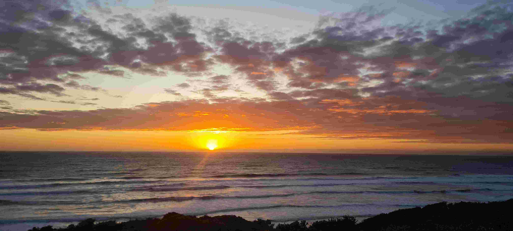
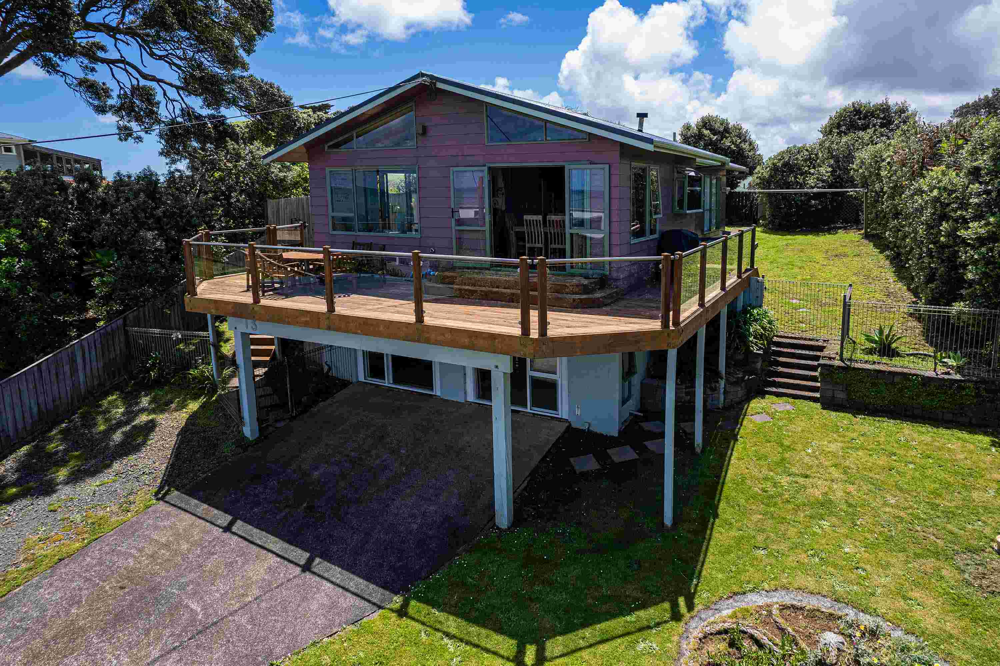
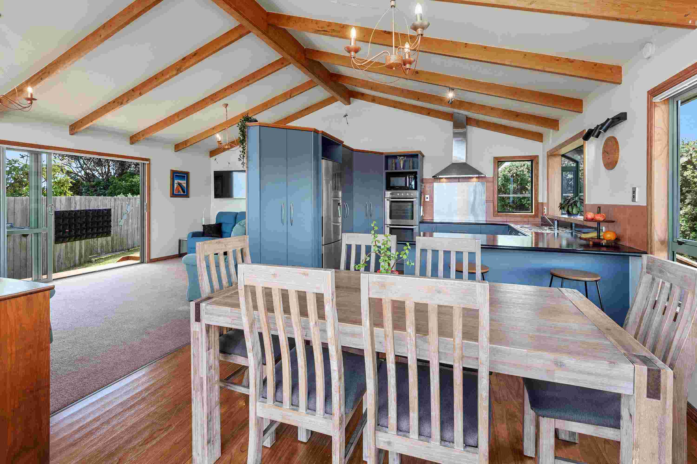

Discover coastal bliss at our Baylys Beach retreat! This 2-story haven positioned at the end of a quiet cul de sac accommodates 6 guests with 2 king bedrooms upstairs and a fun-filled lower level boasting bunk beds, a movie projector, arcade machine and a table tennis table. Enjoy sea views and sunsets from the deck, a spacious modern kitchen, and a cozy lounge with smart tv & wifi. Easy access to Kai Iwi Lakes, kauri bush walks, and the iconic Pouto Lighthouse. Your perfect getaway awaits!

The entire property will be yours to enjoy without interruption. A concrete pad/ washdown area, complete with fish cleaning bench is available to you after a days exploring. A barbeque is available on the outdoor deck near the dining room for your use. Toaster, tea and coffee making facilities and a few condiments are available for guests to use. There is a locked storage room at the rear of the house that will remain inaccessible throughout your stay. A garage at the bottom of the section will also remain locked.

Clean and tidy throughout, however some metal components of the exterior are showing signs of exposure to a west coast marine environment with some corrosion (there will also be sea salt spray on the windows!) The Decor in the entrance and hallway is typical of a 1970s home complete with patterned wallpaper and dark wood trims. Someone with an eye for detail will spot a few minor imperfections in the walls and kitchen benchtop. The number of beds made up will be agreed prior to checking in. Our insurance policy limits us to a max of 6 guests (including infants). Please ensure this respected at all times to prevent voiding our insurance.